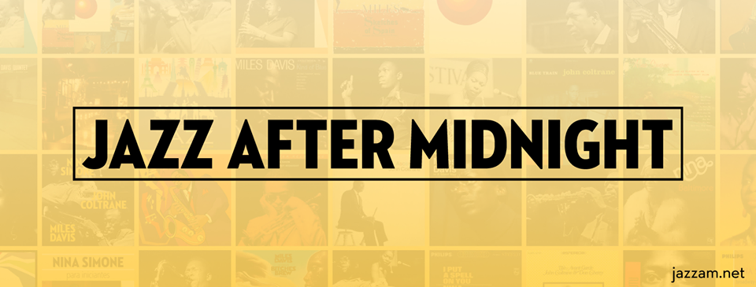

☰ Menu
☰

O objetivo do site é atrair usuários que não têm o Jazz e Blues como estilo musical
favorito, mas que se interessam em saber mais a respeito. Nele, pode-se encontrar
notícias de tal estilo, além de sua história e seus principais artistas, especialmente os
três ícones do Jazz e Blues, que têm parte fundamental na construção do site.
Sobre o Site
O objetivo do site é atrair usuários que não têm o Jazz e Blues como estilo musical
favorito, mas que se interessam em saber mais a respeito. Nele, pode-se encontrar
notícias de tal estilo, além de sua história e seus principais artistas, especialmente os
três ícones do Jazz e Blues, que têm parte fundamental na construção do site.
A escolha do nome Jazz After Midnight baseou-se no contexto histórico do
gênero. A explicação dá-se porque sessões de Jazz acontecem bem tarde, geralmente
após a meia-noite, quando a maior parte do público pagante já se retirou e o foco
principal passa a ser a improvisação, que em inglês pode ser interpretada pela palavra
Jam, iniciais do nome do site.
Redes Sociais